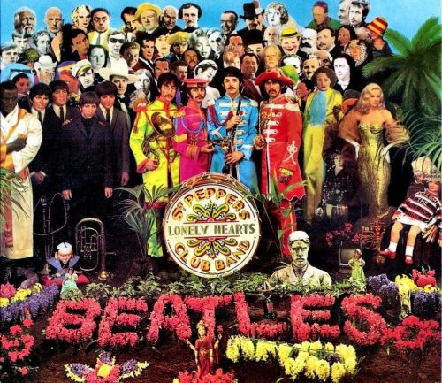
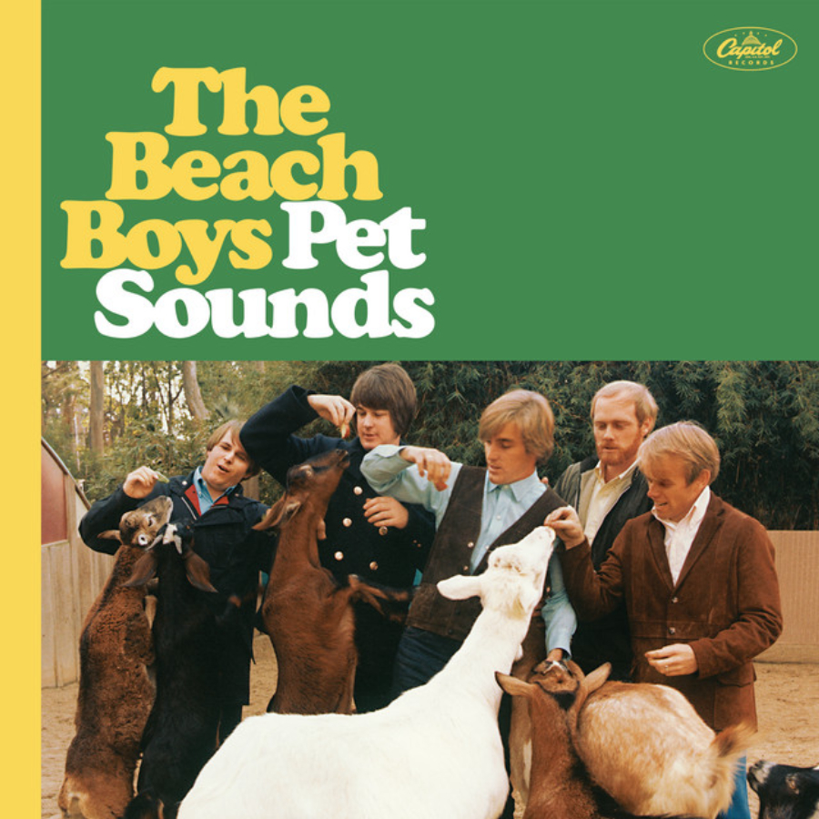
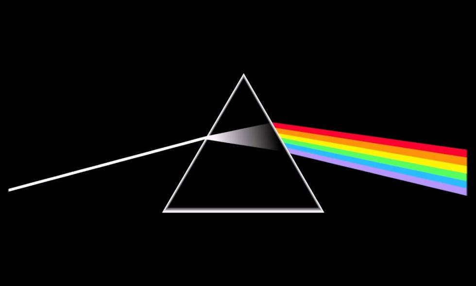
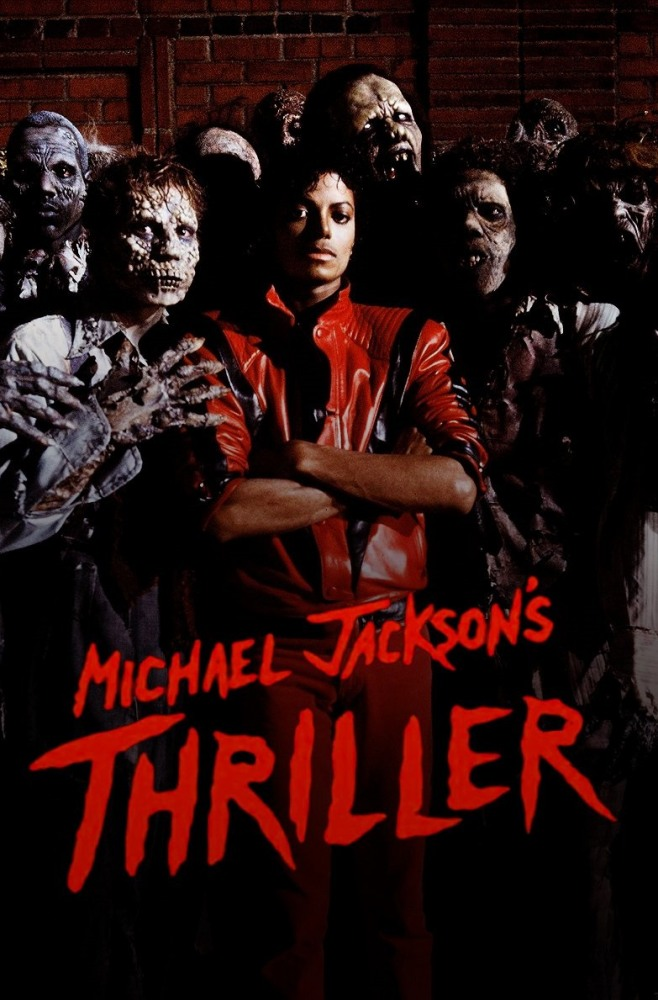

MUSIC
| Sgt. Pepper's Lonely Hearts Club Band by The Beatles
(1967): This groundbreaking album has been praised for its innovative production, songwriting, and eclectic mix of genres. It includes hit songs such as "Lucy in the Sky with Diamonds" and "A Day in the Life." |
 |
| Pet Sounds by The Beach Boys (1966): This album is widely regarded as a masterpiece of orchestral pop and has been cited as a major influence on many artists. It includes classic songs such as "God Only Knows" and "Wouldn't It Be Nice." |  |
| Dark Side of the Moon by Pink Floyd (1973): This album is considered a landmark achievement in progressive rock and is known for its concept album format and sonic experimentation. It includes hits such as "Money" and "Time." |  |
| Thriller by Michael Jackson (1982): This album is one of the best-selling albums of all time and was a major influence on the pop and R&B genres. It includes chart-topping hits such as "Beat It" and "Billie Jean." |  |
| Nevermind by Nirvana (1991): This album is considered a seminal work of grunge rock and helped popularize the genre in the mainstream. It includes hit songs such as "Smells Like Teen Spirit" and "Come as You Are." |  |